Choose MySQL
Click New Connection at the top of the window. Choose MySQL, then click Next.
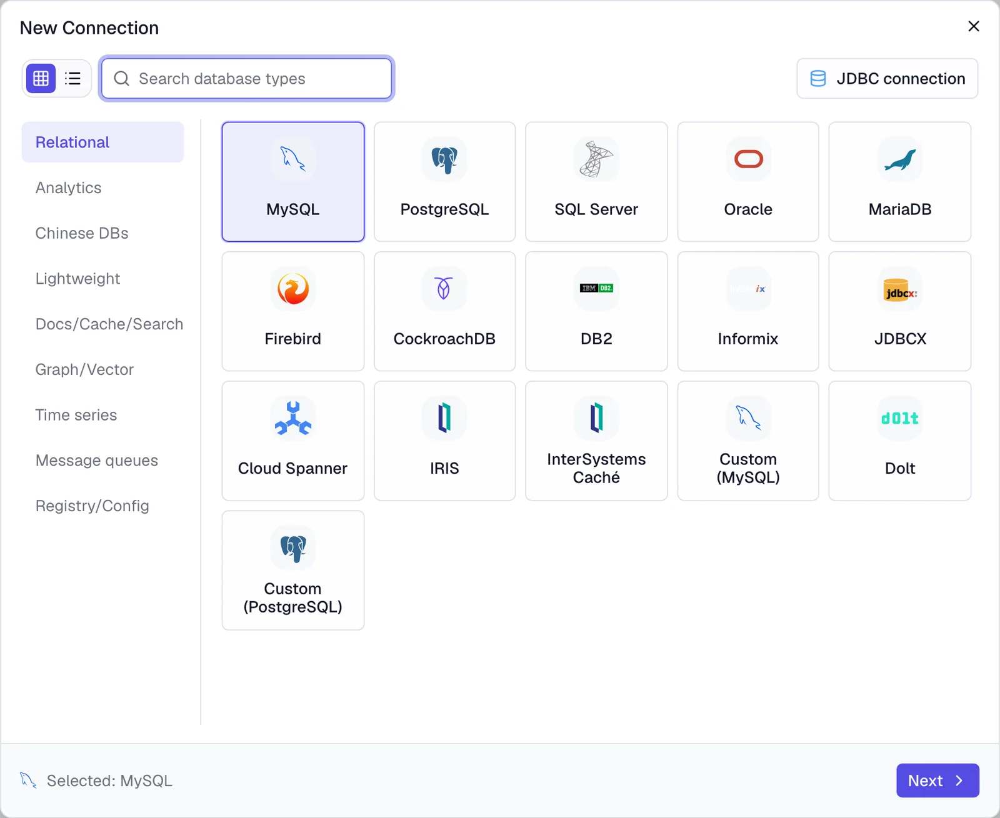
Connect a MySQL database, choose an AI model, and ask questions in plain English. No SQL needed.
Quill works with nearly 90 kinds of databases. This guide uses MySQL. The steps are the same for the others.
Click New Connection at the top of the window. Choose MySQL, then click Next.

Give the connection a name you’ll recognize, like “Shop”. Then fill in the details for your database. Whoever looks after your database, such as your IT team or hosting provider, can give you these.
127.0.0.1.3306 for MySQL.shop.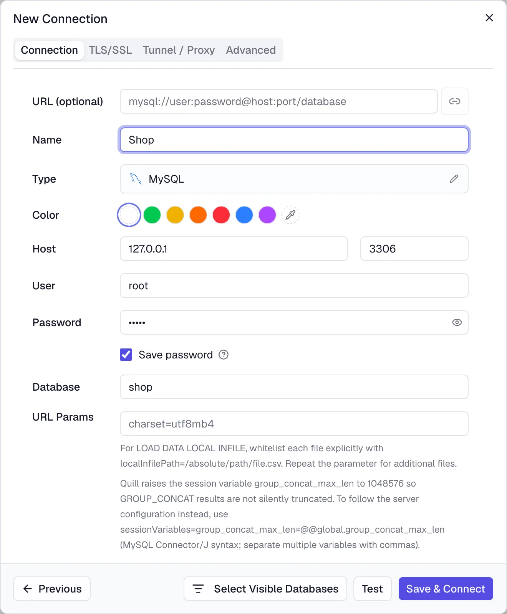
Click Test. When you see Connection successful, click Save & Connect. Your database now appears in the list on the left.
Open your database and its Tables in the list on the left. Double-click a table to see its rows. Nothing you look at changes your data.
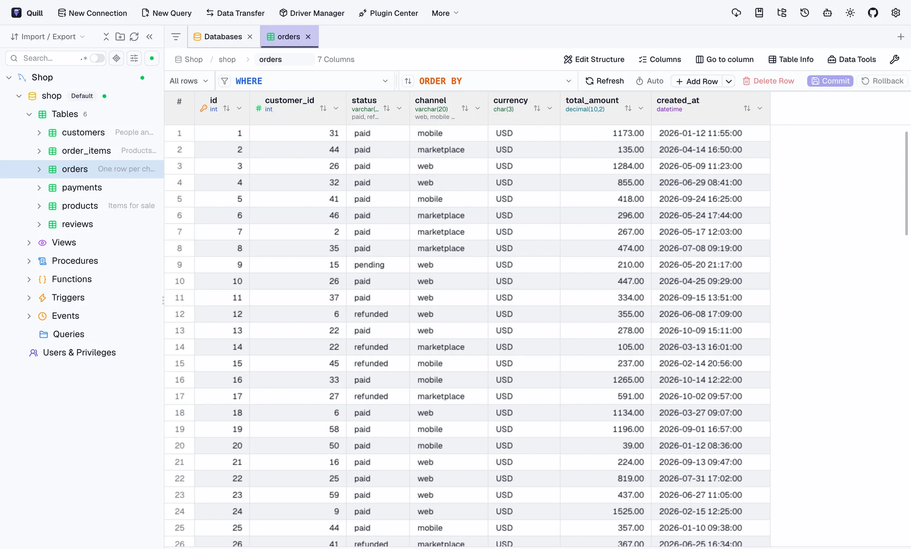
Quill works with the AI service you prefer. Pick one below, or ask your IT team which one your company uses.
Click the gear in the top-right corner, then AI, then Add Config. Choose your AI service from the Provider list.
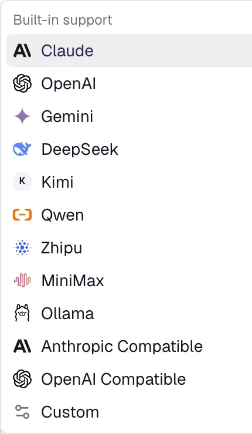
Best for accurate answers. Made by Anthropic.
claude-sonnet-5-5.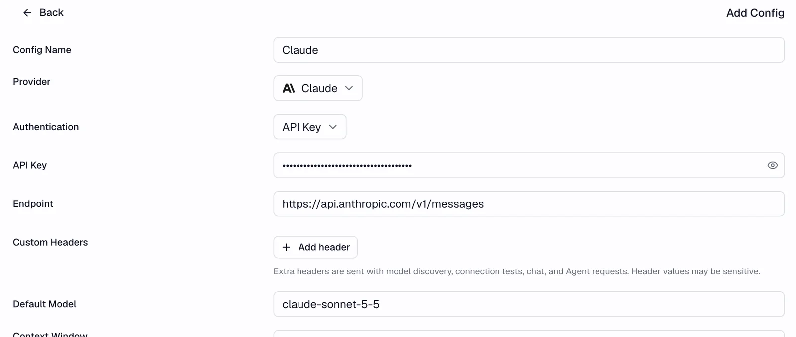
The company behind ChatGPT.
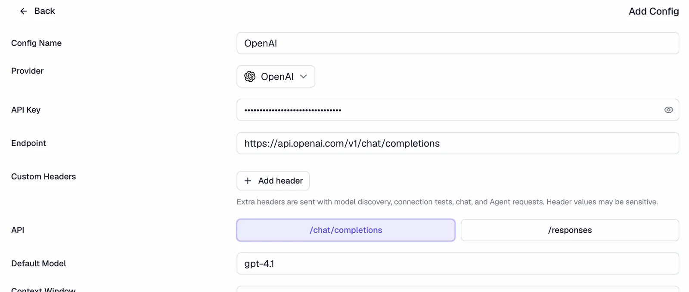
Free and private. The AI runs on your own computer, so nothing leaves it.
qwen2.5:7b.Smaller models on a laptop are slower and less reliable. For important numbers, use the Query Data option in part 3, or a larger model.
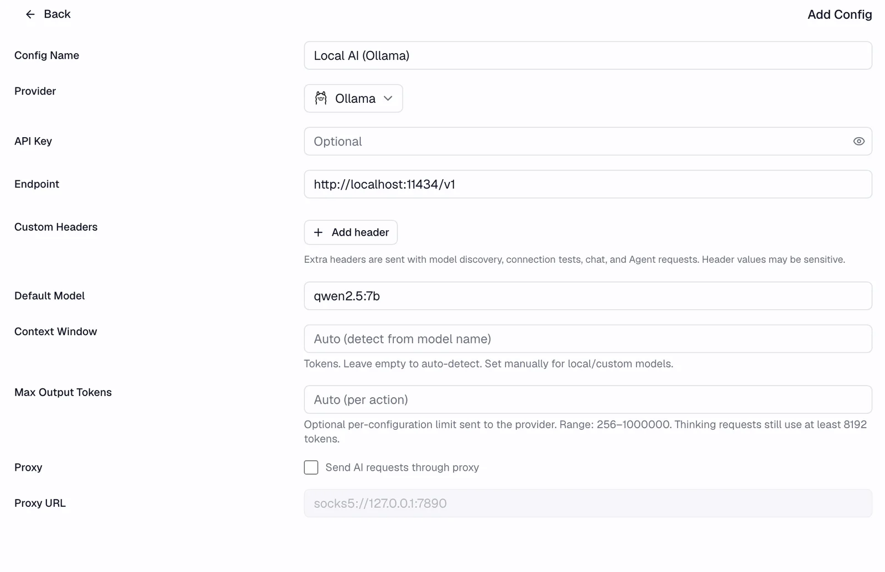
One account for models from many companies.
https://openrouter.ai/api/v1.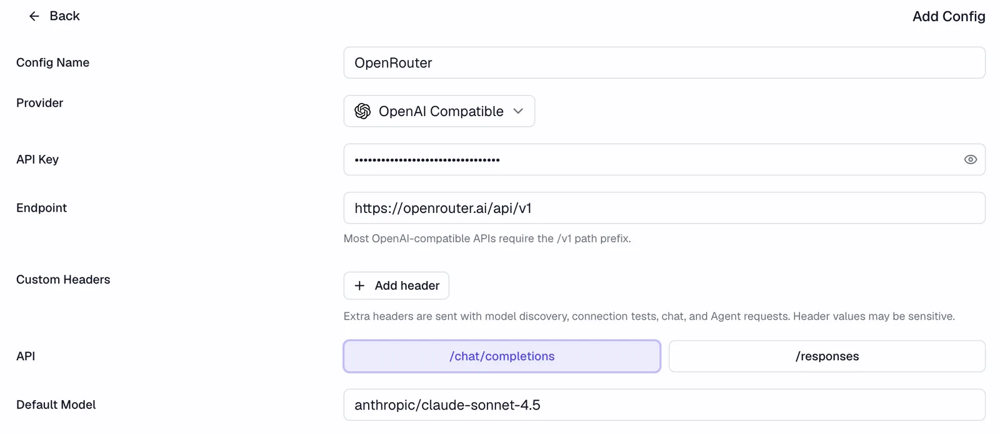
For companies that route AI through their own gateway. Your IT team gives you the details.
http://localhost:4000.pip install 'litellm[proxy]'# litellm.yaml
model_list:
- model_name: claude
litellm_params:
model: anthropic/claude-sonnet-5-5
api_key: os.environ/ANTHROPIC_API_KEY
general_settings:
master_key: sk-quill-locallitellm --config litellm.yaml # serves on port 4000In Quill, use the master_key as the API key and claude as the model.
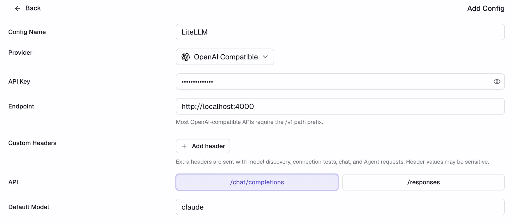
Click Test at the bottom. When you see Connection successful, click Apply. You can add more than one and switch between them later.
Now the fun part. Ask the way you’d ask a colleague who knows the data.
Select your database on the left, then click the robot icon at the top right.
At the bottom of the assistant, choose Agent, then Query Data. In this mode Quill looks up the real numbers instead of guessing.
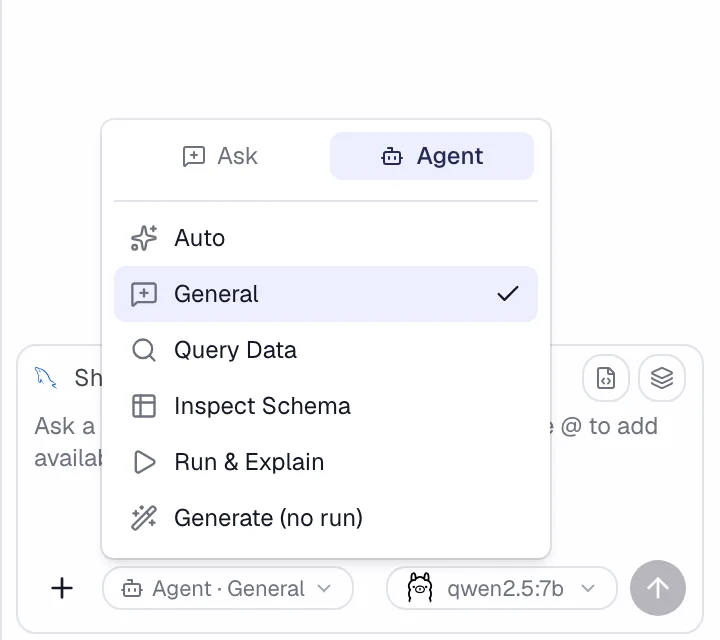
Type your question and press Enter. For example:
“Which products made the most money this year?”
Here’s what Quill did with that question:
The answer is from a small AI model running on a laptop. Larger models give richer answers.
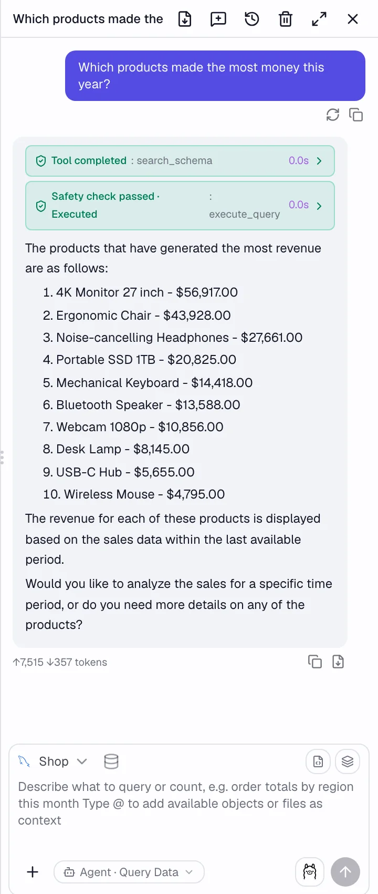
Connect your own databases the same way, from PostgreSQL and SQL Server to Snowflake and MongoDB.
Download Quill